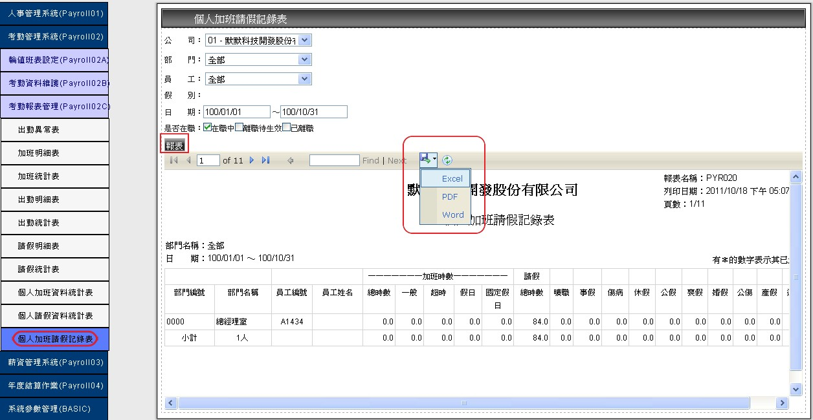

1.個人班表
1-1.新增作業
1-1.1點選左側【個人班表】，下拉式選單來選擇所屬【公司】，參考(圖C-1)。
1-1.2於
的一欄，使用下拉選單方式選擇【員工編號】，【起迄時間】與【班別編號】。
HRMS人力資源系統
參、考勤管理系統 (※注意，【新增】、【刪除】、【編輯】、【查詢】等功能限具有相應功能權限者可使用。)
A.輪值班表設定
1.個人班表
1-1.新增作業
1-1.1點選左側【個人班表】，下拉式選單來選擇所屬【公司】，參考(圖C-1)。
1-1.2於
1-1.2資料選擇完畢後，按下
(圖C-1)
1-2.查詢作業
1-2.1可依【公司】、【部門】、【員工】所顯示的下拉式選單來查詢已建檔人員資料，參考(圖C-2)
(圖C-2)
1-3.編輯與刪除作業
1-3.1欲編輯個人排班表資料，選擇人員後點選
編輯來修改上班【起訖時間】與【班別時間】，參考(圖C-3)，結束請點選
更新或
取消來退出，參考(圖C-4)。
(圖C-3)
(圖C-4)
1-3.2欲刪除資料，可直接點選刪除退出，參考(圖C-5)。
(圖C-5)
2.特別班表
2-1.新增作業
2-1.1 點選左側【特別班表】，下拉式選單來選擇所屬【公司】，參考(圖C-6)。
2-1.2 位於
2-1.3 資料選擇完畢後，按下
(圖C-6)
2-2.查詢作業
2-2.1 可依【公司】所顯示的下拉式選單來查詢已建檔資料 ，參考(圖C-7)。
(圖C-7)
2-3.編輯與刪除作業
2-3.1 選擇
(圖C-8)
(圖C-9)
2-3.2欲刪除資料，於可直接點選刪除退出，參考(圖C-10)。
(圖C-10)
B.考勤資料維護
1.加班資料維護
1-1.新增作業
1-1.1 點選左側【加班資料維護】，下拉式選單來選擇所屬【公司】，參考(圖C-11)。
1-1.2 位於
的一欄，使用下拉選單方式選擇【員工】、【加班日期】、【平日加班】、
【超時加班】、【假日加班】、【國定假日】或者【計薪月份】。1-1.3 資料選擇與輸入完畢後，按下
 (圖C-11)
(圖C-11)
1-2.查詢作業
1-2.1 依【公司】、【部門】、【員工】所顯示的下拉式選單來查詢已建檔資料，參考圖(C-12)
(圖C-12)
1-2.2 針對特別【加班時間】的人員查詢，可點選加班日期，將出現當日加班人員資料，參考圖(C-13)。
(圖C-13)
1-3編輯與刪除作業
1-3.1 選擇編輯來修改【平日加班】、【超時加班】、【假日加班】與【固定假日】，
參考(圖C-14)更新後請點選更新或
(圖C-14)
(圖C-15)
1-3.2欲刪除資料，可直接點選刪除退出，參考(圖C-16)。
(圖C-16)
2.請假資料維護
2-1.新增作業
2-1.1點選左側【請假資料維護】，下拉式選單來選擇所屬【公司】，參考(圖C-17)。
2-1.2於
(圖C-17)
2-2.查詢作業
2-2.1 可使用下拉式選單依照想要查詢資料選擇【公司】、【部門】、【員工】or【假別】，即可找出需要的資料，參考(圖C-18)
(圖C-18)
2-3.編輯與刪除作業
2-3.1 欲編輯資料點選
(圖C-19)更新後的時間請點選
(圖C-19)
(圖C-20)
2-33.2 欲刪除資料可直接點選刪除退出，參考(圖C-21)。
 (圖C-21)
(圖C-21)
C.考勤報表管理
1.出勤異常表查詢作業
1.1 點選左側【出勤異常表】， 參考(圖C-26)。
1.2本作業可依【公司】、【部門】、【員工】、【指定日期】、【計薪區間】、【出勤狀態】所顯示的下拉式選單來查詢已建檔人員資料，點選查詢即可得資料，參考(圖C-26)。
(※出勤狀態有四種類型可以選擇，全部、遲到、早退、曠職)
(圖C-26)
2.加班明細表查詢及匯出報表作業
2.1點選左側【加班明細表】，參考(圖C-27)。
2.2本作業可依【公司】、【部門】、【員工】、【日期】所顯示的下拉式選單來查詢已建檔人員資料，參考(圖C-27)。
(圖C-27)
2.3也可依 【公司】、【部門】、【員工】、【日期】所顯示的下拉式選單來匯出已建檔人員資料報表，參考(圖C-28)。
(※匯出的格式有EXCEL、PDF、WORD，是使用.net的技術報表，無須額外支付費用)
(圖C-28)
3.加班統計表查詢作業
(※ 此作業需先在考勤資料作業中的加班資料建立裡建立資料，建立完成後，系統才會帶出統計表。)3.1 點選左側【加班統計表】，參考(圖C-29)。
3.2本作業可依【公司】、【部門】、【員工】、【加班年月】、【是否在職】所顯示的下拉式選單來查詢已建檔人員資料，參考(圖C-29)。
(※是否在職有三種狀態可以選擇:"在職中"、"離職待生效"、"已離職"選擇後系統分別會帶出不同資料)
(圖C-29)
4.出勤明細表查詢作業
因應各別需求決定,是否客製此功能。
5.出勤統計表查詢作業
因應各別需求決定,是否客製此功能。
6.請假明細表匯出報表作業
6.1點選左側【請假明細表】，參考(圖C-32)。
6.2本作業可依【公司】、【部門】、【員工】、【假別】、【是否在職】所顯示的選單來匯出已建檔人員報表資料，參考(圖C-32)。
(※是否在職有三種狀態可以選擇:"在職中"、"離職待生效"、"已離職"選擇後系統分別會帶出不同資料)
(圖C-32)
(※匯出的格式有EXCEL、PDF、WORD，是使用.net的技術報表，無須額外支付費用)
7.請假統計表查詢作業
7.1點選左側【請假統計表】，參考(圖C-33)。
7.2本作業可依【公司】、【部門】、【員工】、【請假年月】、【是否在職】所顯示的選單來查詢已建檔人員報表資料，參考(圖C-33)。
(※是否在職有三種狀態可以選擇:"在職中"、"離職待生效"、"已離職"選擇後系統分別會帶出不同資料)
(圖C-33)
8.個人加班資料統計表查詢及匯出報表作業
8.1點選左側【個人加班資料統計表】，參考(圖C-34)。
8.2本作業可依【公司】、【部門】、【員工】、【統計年度】所顯示的選單來查詢已建檔人員報表資料，參考(圖C-34)。
(圖C-34)
8.3也可依【公司】、【部門】、【員工】、【統計年度】所顯示的選單來匯出已建檔人員報表資料，參考(圖C-35)。
(※匯出的格式有EXCEL、PDF、WORD，是使用.net的技術報表，無須額外支付費用)
(圖C-35)
9.個人請假資料統計表查詢及匯出報表作業
9.1點選左側【個人請假資料統計表】，參考(圖C-36)。
9.2本作業可依【公司】、【部門】、【員工】、【統計年度】所顯示的選單來查詢已建檔人員報表資料，參考(圖C-36)。
(圖C-36)
9.3可以依【公司】、【部門】、【員工】、【統計年度】所顯示的選單來匯出已建檔人員報表資料，參考(圖C-37)。
(※匯出的格式有EXCEL、PDF、WORD，是使用.net的技術報表，無須額外支付費用)
(圖C-37)
10.個人加班請假紀錄及匯出報表作業
10.1點選左側【個人加班請假記錄表】，參考(圖C-38)。
10.2本作業可依【公司】、【部門】、【員工】、【日期】、【是否在職】所顯示的選單來查詢已建檔人員報表資料，參考(圖C-38)。
(※匯出的格式有EXCEL、PDF、WORD，是使用.net的技術報表，無須額外支付費用)
(圖C-38)